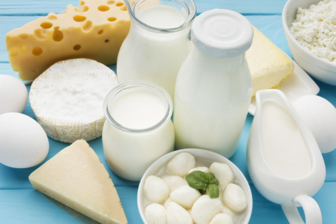

Industry Information
Feb. 14, 2025
Propionic acid is a naturally occurring short‐chain fatty acid with the chemical formula C₃H₆O₂. It is a colorless liquid with a pungent odor and is found both in nature and as a synthesized compound. In the context of food, propionic acid plays a dual role: it is widely used among propionic acid in food additives and also naturally produced by certain microorganisms. This article explains what propionic acid is, where it comes from, how it is manufactured, its functions in food (both positive and negative), its safety, how its usage is regulated internationally, and its applications in other industries.

Propionic acid (also known as propanoic acid) is a carboxylic acid that occurs naturally in the environment and in the gastrointestinal tracts of animals. Its structure, CH₃CH₂COOH, gives it properties that make it an effective antimicrobial agent. Because of these properties, it is frequently employed in food preservation and is a key component among propionic acid in food additives. In addition to its preservative qualities, propionic acid is also an intermediate in several biochemical processes.
Propionic acid is produced by various microorganisms during the fermentation of carbohydrates. For example, certain species of bacteria in the genus Propionibacterium naturally generate propionic acid during the fermentation of lactate or sugars. This natural formation explains its presence in fermented foods such as Swiss-type cheeses. Industrially, propionic acid can also be derived from petrochemical processes, though increasing interest in sustainable methods has led to a focus on biotechnological production methods using renewable feedstocks like glycerol and corn steep liquor.
There are two primary routes for the production of propionic acid:
Biotechnological Production: Microbial fermentation is a popular method. Microbes such as Propionibacterium freudenreichii convert substrates (e.g., sugars or glycerol) into propionic acid through metabolic pathways like the Wood–Werkman cycle. This method is especially valued in the production of propionic acid in food additives because it can be based on renewable resources.
Chemical Synthesis: Industrially, propionic acid can also be synthesized by oxidizing propionaldehyde or through processes involving the hydrocarboxylation of ethylene. These chemical routes typically use petrochemical feedstocks, though advances in catalytic processes are gradually shifting production toward more sustainable options.
Propionic acid is extensively used as a food preservative. Its primary function is to inhibit the growth of mold and certain bacteria, which is why it is a common ingredient in baked goods, dairy products, and processed meats. By lowering the pH and interfering with microbial energy production, it extends shelf life and maintains food safety. In many recipes and formulations, the benefits of propionic acid in food are evident in the enhanced freshness and reduced spoilage of products.
Despite its preservative benefits, some studies suggest that excessive exposure to propionic acid—especially from processed foods—could have undesirable metabolic effects. For example, concerns have been raised regarding its potential role as a metabolic disruptor in sensitive individuals, possibly affecting insulin sensitivity and gut microbiota balance. Nonetheless, when used within regulated limits, the adverse effects remain minimal for the general population.
Propionic acid is classified as “generally recognized as safe” (GRAS) by regulatory authorities such as the U.S. Food and Drug Administration (FDA). In food applications, it is used at low concentrations—typically 0.1–0.4% in bakery products—to ensure effective preservation without compromising consumer health. However, as with many food additives, ongoing research evaluates its long-term effects, especially when consumed in high amounts or by individuals with specific sensitivities. Overall, when used according to current good manufacturing practices, propionic acid is considered safe.
Propionic acid and its salts are approved for food use worldwide under strict limits that ensure both effectiveness and safety:
United States: Under 21 CFR §184.1081, propionic acid is GRAS. In bakery products, typical usage is about 0.1–0.3% by weight.
European Union: Regulation (EC) No 1333/2008 (amended by Commission Regulation (EU) No 1129/2011) authorizes propionic acid (E280) and its salts in foods, with bakery products generally limited to around 0.3% by weight.
Australia/New Zealand: The FSANZ Food Standards Code (Standard 1.3.2) permits use in bakery items at levels of approximately 0.3–0.4% by weight.
Japan: The Food Sanitation Act sets similar limits, typically not exceeding 0.3% by weight in finished products.
These regulations, with explicit numerical limits, ensure propionic acid is used safely while effectively inhibiting microbial growth.
Agriculture: Propionic acid is employed as a preservative in animal feed, reducing spoilage and inhibiting the growth of harmful microorganisms. It is also used to prevent milk fever in dairy cows.
Pharmaceuticals: Due to its antimicrobial and anti-inflammatory properties, derivatives of propionic acid are incorporated into drugs, including non-steroidal anti-inflammatory medications.
Polymer and Chemical Industry: Propionic acid serves as an intermediate in the production of cellulose acetate propionate and other polymers. It is also utilized in the synthesis of herbicides and flavoring agents.
Cosmetics: Its antimicrobial properties make it useful in certain cosmetic formulations to enhance shelf life.
These diverse applications demonstrate the versatility of propionic acid across different sectors, highlighting its significance beyond just propionic acid in food.
Propionic acid is a multifaceted compound that plays an essential role in food preservation, both as a naturally occurring substance and as an ingredient in propionic acid in food additives. Its microbial and chemical production pathways enable its widespread use in extending the shelf life of food, though its effects on metabolism continue to be studied. With strict regulations in place across various countries, its application as a food preservative is considered safe when used appropriately. Moreover, its utility extends into agriculture, pharmaceuticals, and industrial manufacturing, underscoring the broad uses of propionic acid in modern society.
Understanding the production, function, and regulation of propionic acid helps consumers and professionals make informed decisions about its application and potential health impacts in the food supply and beyond.
GOLIATH is a global chemical distributor with five major product lines, one of which is Food/Feed Ingredients. We supply a wide range of Food/Feed Ingredients, including propionic acid. For more chemical products, please visit our Food/Feed Ingredients website.
If you have any procurement needs or questions regarding these chemicals, please feel free to contact us.

Goliath Ingredients Holding Limited
1st Floor, Ellen Skelton Building, 3076 Sir Francis Drake’s Highway, Road Town, Tortola, VG1110, British Virgin Islands.
henry@goliathholding.com
Navigation
Email: henry@goliathholding.com